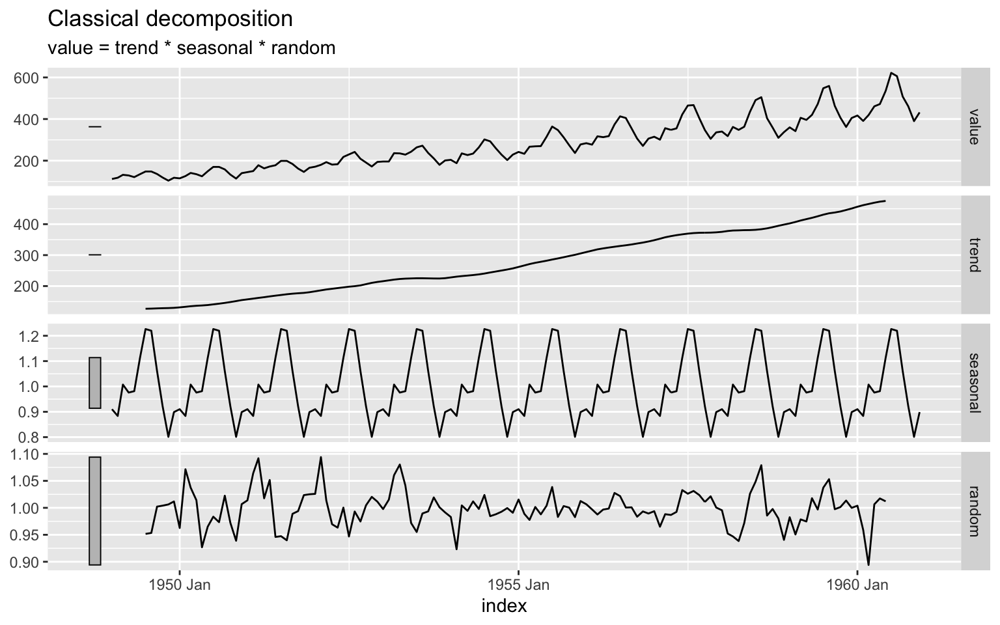

Generally, we can categorize patterns in time series data into the following two categories:
Those patterns are either exists or not (e.g., a series may have a trend or not). We can express those components using the following notation for additive structure:
\[Y_t=T_t + C_t + S_t + I_t, \]
And for multiplicative structure:
\[Y_t=T_t \times C_t \times S_t \times I_t \]
For simplicity reasons, we will joined the cycle component into the trend, and rewrite the series components notation for additive structure:
\[Y_t=T_t + S_t + I_t, \] And for multiplicative structure:
\[Y_t=T_t \times S_t \times I_t \]
In this section, we will focus on decomposition methods of time series to its components - the trend, seasonal, and irregular. In the following examples, we will use the AirPassengers dataset to demonstrate the different decomposition approaches. This dataset describes the monthly number of international passengers (in thousands) in the US between 1949 and 1960. Before jumping to the decomposition of the series, let’s take a quick look at the series:
data("AirPassengers")
library(TSstudio)
ts_info(AirPassengers)## The AirPassengers series is a ts object with 1 variable and 144 observations
## Frequency: 12
## Start time: 1949 1
## End time: 1960 12ts_plot(AirPassengers,
slider = TRUE,
title = "Monthly Airline Passenger Numbers 1949-1960",
Ytitle = "Thousands of Passengers",
Xtitle = paste("Box, G. E. P., Jenkins, G. M. and Reinsel, G. C. (1976)", "<br>", "Time Series Analysis, Forecasting and Control"))The classical decomposition (or by its full name - classical seasonal decomposition by moving average) is one of the most common estimation methods of the series components. R provides a built-in method for decomposing time series with the decompose function from the stats package. In this section we will use the AirPassengers dataset to demonstrated different decomposition approaches.
data("AirPassengers")
d <- decompose(AirPassengers)
str(d)## List of 6
## $ x : Time-Series [1:144] from 1949 to 1961: 112 118 132 129 121 135 148 148 136 119 ...
## $ seasonal: Time-Series [1:144] from 1949 to 1961: -24.75 -36.19 -2.24 -8.04 -4.51 ...
## $ trend : Time-Series [1:144] from 1949 to 1961: NA NA NA NA NA ...
## $ random : Time-Series [1:144] from 1949 to 1961: NA NA NA NA NA ...
## $ figure : num [1:12] -24.75 -36.19 -2.24 -8.04 -4.51 ...
## $ type : chr "additive"
## - attr(*, "class")= chr "decomposed.ts"The decompose function has a customized plot method:
plot(d)You can notice that the random component is not so random… The main reason is that the decompose function, by default, uses adaptive calculation for the seasonal component. Averaging a multiplicative seasonal component without transformation will yield high residuals at the beginning and end of the series and lower in the middle (closer to the average). The type argument enables us to create a log transformation of the series to reduce the seasonal component growth over time:
d_m <- decompose(AirPassengers, type = "multiplicative")
plot(d_m)The ts_decompose function from the TSstudio provides an interactive wrapper for the decompose function plot method. In addition, it enables us to plot, side by side, the decomposition of both additive and multiplicative methods:
ts_decompose(AirPassengers, type = "both")The calculation of the series components with the classical decomposition method is straightforward and based on the following steps:
Let’s apply this calculation to the AirPassenger series. We will use in this process the following packages:
We will start with trend estimation by using two-sided moving average smoothing with the ts_ma function. As the series frequency is 12, we should use a 13 order moving average (that is, averaging each observation with its six past and future consecutive observations):
library(plotly)
library(dplyr)
library(lubridate)
ap_smooth <- ts_ma(AirPassengers, n = 6,
separate = FALSE)Let’s plot the series with the trend estimation:
ap_smooth$plot %>%
layout(legend = list(x = 0.1, y = 0.9))Next step, we will convert the series and smoothed trend into a data.frame object with the ts_to_prophet function and merge the two series:
df <- ts_to_prophet(AirPassengers) %>%
select(date = ds, y) %>%
left_join(ts_to_prophet(ap_smooth$ma_6) %>%
select(date = ds, trend = y), by = "date")
head(df, 8)## date y trend
## 1 1949-01-01 112 NA
## 2 1949-02-01 118 NA
## 3 1949-03-01 132 NA
## 4 1949-04-01 129 NA
## 5 1949-05-01 121 NA
## 6 1949-06-01 135 NA
## 7 1949-07-01 148 125.76923
## 8 1949-08-01 148 126.84615Note: the cost of using the moving average for trend estimation is lost of the first and last n observation. Where n is the order of the moving average, in this case, is the first and last 6 observations.
Next, we will remove the trend from the series by subtracting the trend estimation from the series:
df$detrend <- df$y - df$trend
head(df, 8)## date y trend detrend
## 1 1949-01-01 112 NA NA
## 2 1949-02-01 118 NA NA
## 3 1949-03-01 132 NA NA
## 4 1949-04-01 129 NA NA
## 5 1949-05-01 121 NA NA
## 6 1949-06-01 135 NA NA
## 7 1949-07-01 148 125.76923 22.230769
## 8 1949-08-01 148 126.84615 21.153846The following plot summarises all the above steps:
ts_plot(df,
title = "AirPassenger Detrending") %>%
layout(legend = list(x = 0.1, y = 0.9))Once we created the detrended series, we will group the detrend series by the frequency units, in this case, the month of the year. We will create new variables for the year and month using the year and month function from the lubridate package:
df$year <- year(df$date)
df$month <- month(df$date)Before we calculate the seasonal, let’s view the detrend series in yearly breakdown:
p <- plot_ly()
for(i in unique(df$year)){
temp <- NULL
temp <- df %>% filter(year == i)
p <- p %>% add_lines(x = temp$month,
y = temp$detrend,
name = i)
}
pNow, let’s calculate the seasonal component and add it to the seasonal plot above:
seasonal_comp <- df %>%
group_by(month) %>%
summarise(month_avg = mean(detrend, na.rm = TRUE),
.groups = "drop")
p %>% add_lines(x = seasonal_comp$month,
y = seasonal_comp$month_avg,
line = list(color = "black", dash = "dash", width = 4),
name = "Seasonal Component")You can notice the gap between the first years and the most recent ones on the series and average.
To calculate the irregular component, we will have to merge back the seasonal component back to then to subtract from the series the estimated trend and seasonal components:
df <- df %>% left_join(seasonal_comp, by = "month")
df$irregular <- df$y - df$trend - df$month_avg
head(df)## date y trend detrend year month month_avg irregular
## 1 1949-01-01 112 NA NA 1949 1 -30.8251748 NA
## 2 1949-02-01 118 NA NA 1949 2 -42.0279720 NA
## 3 1949-03-01 132 NA NA 1949 3 -4.1398601 NA
## 4 1949-04-01 129 NA NA 1949 4 -6.9440559 NA
## 5 1949-05-01 121 NA NA 1949 5 -0.6993007 NA
## 6 1949-06-01 135 NA NA 1949 6 37.1468531 NALast but not least, let’s plot the series and its components:
ts_plot(df[, c("date", "y" ,"trend", "detrend", "month_avg", "irregular")],
title = "AirPassenger and its Components",
type = "multiple")The classical_decomposition function from the feasts package provides similar functionality as the decompose function for tsibble objects using the general fable workflow. Let covert the AirPassengers series from ts to tsibble object and decompose it:
library(tsibble)
library(feasts)
library(fabletools)
ap_tsibble <- as_tsibble(AirPassengers)
decompose_md <- ap_tsibble %>%
model(classical_decomposition(value, type = "multiplicative"))We can extract the decomposition component from the model object with the component function:
decompose_md %>%
components() %>%
head()## # A dable: 6 x 7 [1M]
## # Key: .model [1]
## # Classical Decomposition: value = trend * seasonal * random
## .model index value trend seasonal random season_adjust
## <chr> <mth> <dbl> <dbl> <dbl> <dbl> <dbl>
## 1 "classical_decomposition(value, type = \"multiplicative\")" 1949 Jan 112 NA 0.910 NA 123.
## 2 "classical_decomposition(value, type = \"multiplicative\")" 1949 Feb 118 NA 0.884 NA 134.
## 3 "classical_decomposition(value, type = \"multiplicative\")" 1949 Mar 132 NA 1.01 NA 131.
## 4 "classical_decomposition(value, type = \"multiplicative\")" 1949 Apr 129 NA 0.976 NA 132.
## 5 "classical_decomposition(value, type = \"multiplicative\")" 1949 May 121 NA 0.981 NA 123.
## 6 "classical_decomposition(value, type = \"multiplicative\")" 1949 Jun 135 NA 1.11 NA 121.Similarly to what we saw in the previous section, we can use the autoplot function to visualize the series components:
decompose_md %>%
components() %>%
autoplot()
The STL (Seasonal and Trend decomposition using LOESS) method is an advanced decomposition approach which is based on the LOESS smoothing method (locally estimated scatterplot smoothing). The main advantage of the STL method (vs. the classical method) is the ability to control the smoothing period of both the trend and seasonal component. That becomes a super useful series that has a multiplicative seasonality. The STL main parameters:
In R, the stl function from the stats package is the main function for STL decomposition of ts objects. The STL function from the feasts package provides a wrapper for the stl function for tsibble objects.
We will start with a low smoother of 5 lags for the trend and will average the seasonal component using an inf window (i.e., using all the observations of the series) by setting window='periodic':
ap_tsibble %>%
model(STL(value ~ trend(window=5) + season(window='periodic'),
robust = TRUE)) %>%
components() %>%
autoplot()You can notice from the trend and seasonal component estimation above:
Let’s see the effect on the trend estimation when increating the trend argument window:
ap_tsibble %>%
model(STL(value ~ trend(window=13) + season(window='periodic'),
robust = TRUE)) %>%
components() %>%
autoplot()Similarly, we will change the season argument window to 7:
ap_tsibble %>%
model(STL(value ~ trend(window=13) + season(window= 7),
robust = TRUE)) %>%
components() %>%
autoplot()As we will keep reducing the season window, the better the STL model will capture the series’s multiplicative seasonality. It is recommended not to reduce the window below to 5:
ap_tsibble %>%
model(STL(value ~ trend(window=13) + season(window= 5),
robust = TRUE)) %>%
components() %>%
autoplot()Let’s decompose the natural gas series using both the classical and STL methods:
naturalgas_path <- paste(rprojroot::find_rstudio_root_file(), "data", "NATURALGAS.csv", sep = "/")
us_gas <- read.csv(naturalgas_path, stringsAsFactors = FALSE) %>%
setNames(c("date", "y")) %>%
mutate(date = yearmonth(as.Date(date))) %>%
as_tsibble(index = "date")
head(us_gas)## # A tsibble: 6 x 2 [1M]
## date y
## <mth> <dbl>
## 1 2000 Jan 2510.
## 2 2000 Feb 2331.
## 3 2000 Mar 2051.
## 4 2000 Apr 1783.
## 5 2000 May 1633.
## 6 2000 Jun 1513.